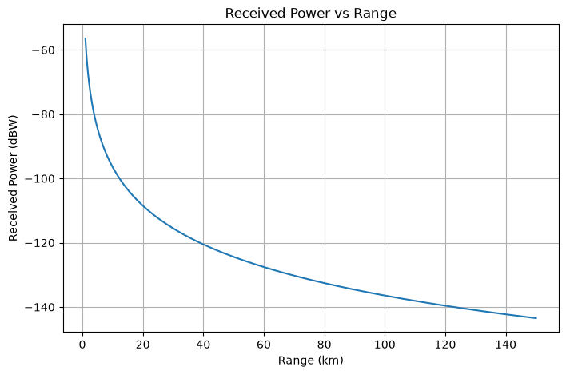
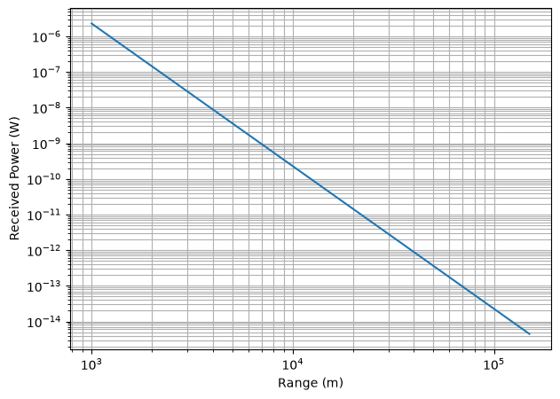
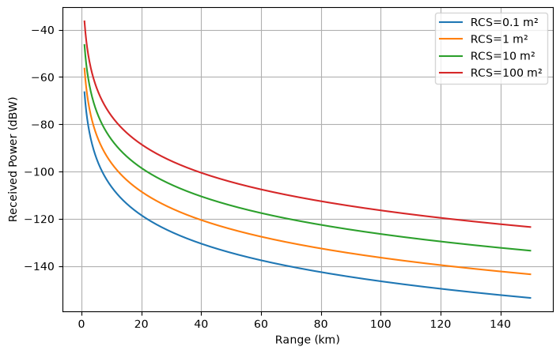
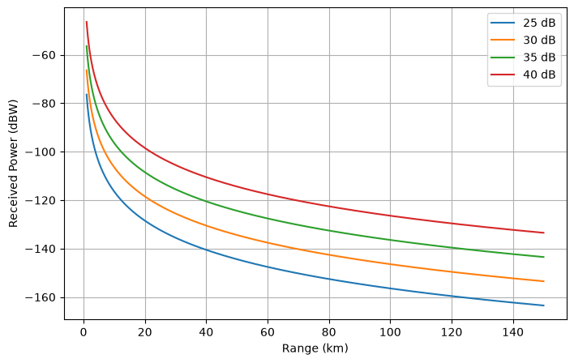

Radar Equation#
Important
Objectives
Understand the monostatic radar equation
Explain the physical meaning of each parameter
Calculate received power as a function of range
Visualize the \(R^{-4}\) dependence
Investigate parameter sensitivity
Estimate detection range using receiver sensitivity
1. Radar Fundamentals#
A radar transmits electromagnetic energy toward a target. A portion of the scattered energy returns to the radar receiver. The received power is governed by the radar equation.
Monostatic Radar Equation#
where:
\(P_t\) = transmitted power
\(G\) = antenna gain
\(\lambda\) = wavelength
\(\sigma\) = radar cross section (RCS)
\(R\) = range
\(L\) = system losses
The most important observation is that received power decreases as \(R^{-4}\).
import numpy as np
import matplotlib.pyplot as plt
2. Define Radar Parameters#
Pt = 1e6 # W
G_dB = 35 # dB
f = 10e9 # Hz
sigma = 1.0 # m^2
L_dB = 3 # dB
c = 3e8
lam = c/f
G = 10**(G_dB/10)
L = 10**(L_dB/10)
print(f"Wavelength = {lam:.4f} m")
Wavelength = 0.0300 m
3. Received Power versus Distance#
R = np.linspace(1e3,150e3,2000)
Pr = (Pt*G**2*lam**2*sigma)/(((4*np.pi)**3)*(R**4)*L)
Pr_dBW = 10*np.log10(Pr)
plt.figure(figsize=(8,5))
plt.plot(R/1000,Pr_dBW)
plt.xlabel('Range (km)')
plt.ylabel('Received Power (dBW)')
plt.title('Received Power vs Range')
plt.grid(True)
plt.show()

4. Log-Log Representation#
plt.figure(figsize=(7,5))
plt.loglog(R,Pr)
plt.xlabel('Range (m)')
plt.ylabel('Received Power (W)')
plt.grid(True,which='both')
plt.show()

5. Example Values at Selected Ranges#
for r_km in [5,10,25,50,100,150]:
r=r_km*1000
pr=(Pt*G**2*lam**2*sigma)/(((4*np.pi)**3)*(r**4)*L)
print(f'{r_km:>3} km : {10*np.log10(pr):8.2f} dBW')
5 km : -84.39 dBW
10 km : -96.43 dBW
25 km : -112.35 dBW
50 km : -124.39 dBW
100 km : -136.43 dBW
150 km : -143.48 dBW
6. Sensitivity to Radar Cross Section#
rcs_values=[0.1,1,10,100]
plt.figure(figsize=(8,5))
for s in rcs_values:
pr=(Pt*G**2*lam**2*s)/(((4*np.pi)**3)*(R**4)*L)
plt.plot(R/1000,10*np.log10(pr),label=f'RCS={s} m²')
plt.xlabel('Range (km)')
plt.ylabel('Received Power (dBW)')
plt.legend()
plt.grid(True)
plt.show()

7. Sensitivity to Antenna Gain#

8. Detection Range Estimation#
Assume receiver sensitivity of -120 dBW. Determine the maximum detectable range.
threshold_dBW=-120
threshold=10**(threshold_dBW/10)
Rmax=((Pt*G**2*lam**2*sigma)/(((4*np.pi)**3)*L*threshold))**0.25
print(f'Maximum detection range = {Rmax/1000:.2f} km')
Maximum detection range = 38.83 km